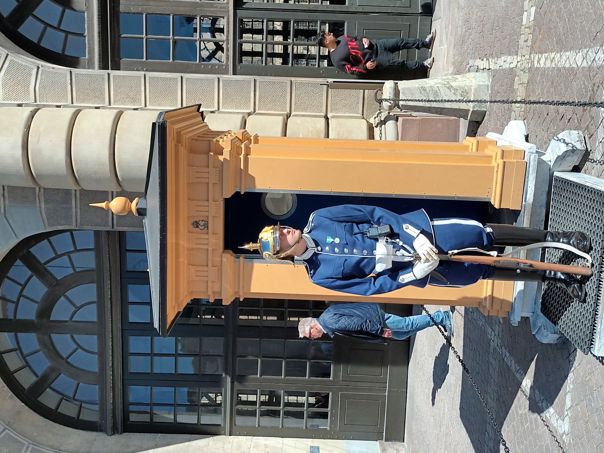
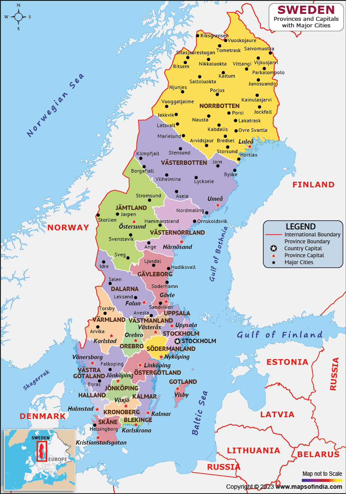

Tagasi

Rootsi (rootsi keeles Sverige, ametliku nimega Rootsi Kuningriik (Konungariket Sverige)) on riik Euroopas Skandinaavia poolsaare idaosas.
Asustatud -- 6. juuni 1523
Pealinn-Stockholm
Keel -- rootsi keel
Rahva arv -- 10 596 652
Linnad mida olen külastanud: Stockholm
Mida olen saavutanud selle reismisega:
Ajalugu õppinud:✅
Kohaliku toitu proovinud:✅
Kohaliku elamust proovinud:❌
